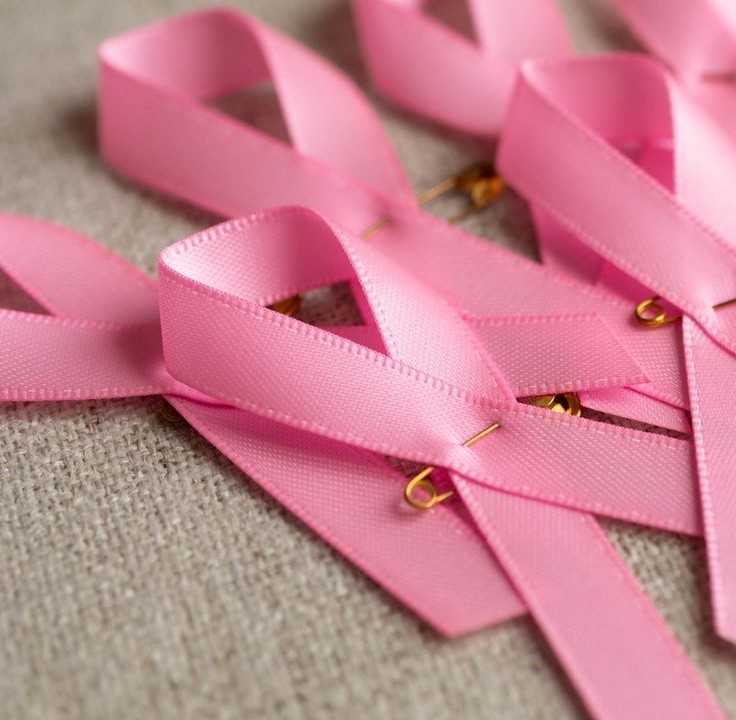

Octobre Rose n’est pas le rose. C’est une réalité.
Octobre 2026 · SensibilisationNous avons rappelé que derrière les rubans et les campagnes se cachent des femmes qui vivent l’anxiété, le doute ou la difficulté d’accéder aux soins. Le cancer du sein n’est pas un sujet décoratif : c’est une réalité qui mérite notre attention.